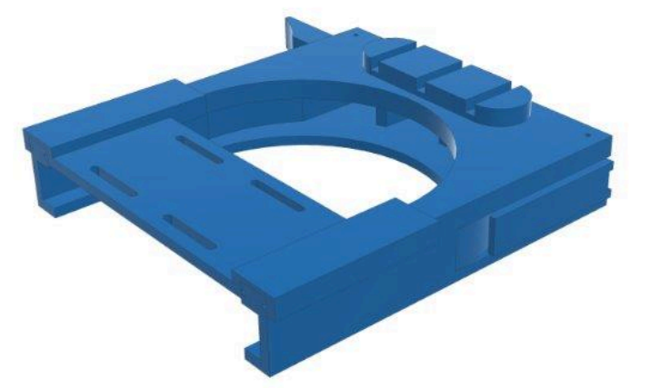
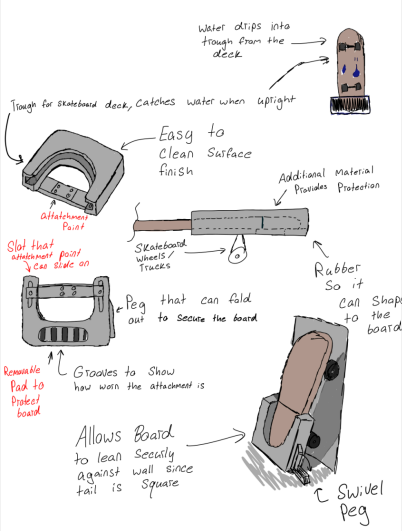
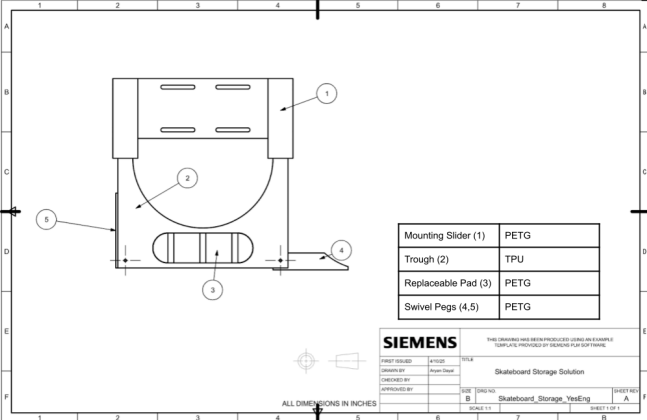

PRODUCT DESIGN · CAD · TOLERANCE ANALYSIS
Skateboard Storage and Cleaning Solution
A product design project focused on storing dirty skateboards upright while reducing water, mud, and debris tracked into indoor spaces.

THE PROBLEM
Keeping skateboards clean, stored, and accessible
This project addressed the problem of skateboard cleaning, storage, and management. The product was designed to help users store skateboards indoors while capturing runoff water and reducing mud or debris tracked into buildings.
Customer and market research led to engineering requirements including liquid capture, stand-alone storage capability, low weight, tool-free usability, and compatibility with different skateboard sizes.
CONCEPT DEVELOPMENT
From sketch to selected product concept
The selected concept combined a water-catching trough, sliding mount, swivel pegs, and replaceable scrape pad. The trough catches water while the board is upright, the swivel pegs improve stability, and the replaceable pad protects the attachment during wear.

DESIGN REALIZATION
CAD assembly and technical drawings
After selecting the concept, the design was translated into CAD and engineering drawings. The final assembly included the mounting slider, trough, replaceable pad, and swivel pegs.
The project also included bill-of-materials development, material selection, assembly planning, and tolerance analysis to check whether the parts would fit reliably during production.

VALIDATION
Checking fit, cost, and manufacturability
The design was evaluated through tolerance stack-up analysis, benchmarking, and cost modeling. The final report estimated that at least 98% of parts would fit and identified trade-offs between installation simplicity, locking capability, and final product cost.
The full-volume production estimate placed the cost per unit at approximately $10.27, while the prototype cost was higher due to lower-volume fabrication and assembly assumptions.